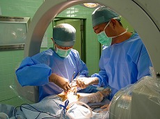

救急科 ／ 脳神経外科 ／ 整形外科 ／ 消化器外科
乳腺外科 ／ 内科 ／ 産科・婦人科 ／ 健診部門
リハビリテーション科 ／ 透析室 ／ 麻酔科
救急科
|
東京都指定二次医療機関として、救急初療を担当しています。トリアージナース制度を導入しております。 |
脳神経外科
|
頭痛・めまい・呂律がまわらない・手足のしびれ・麻痺・物忘れなど、個々の相談に応じています。 |
整形外科
|  |
骨折・打撲・ねん挫などの一般外傷のほか、関節リウマチ・痛風などの代謝性疾患に対して加療を行っています。また、高齢化に伴う骨粗鬆症や変形性関節症、脊椎管狭窄症などの様々な運動器疾患に対してもレントゲンだけでなく、骨密度測定装置やＣＴ、ＭＲＩなどの画像検査を用いて、専門的な治療を提供しております。特に大腿骨近位部骨折は、骨折の再発リスクが高くなる（骨折の連鎖）と言われ、骨粗鬆症治療の導入が重要であると考えられています。当院では、入院中に骨粗鬆症の評価を行い、二次性骨折予防を積極的に行っております。 |
消化器外科
|
消化器外科では、胃癌・大腸癌や、肝臓癌・胆道癌・膵癌など各種癌や胆石症に対し、腹腔鏡下手術を積極的に行い、手術後の入院日数の短縮に努めています。さらに、鎮痛剤を用いた苦痛を緩和した胃・大腸カメラによる癌健診を行っています。ポリープ切除も積極的に施行しています。 |
乳腺外科
|
日本人の乳がん発生率は年々増加し、女性のがんの第一位を占めています。 |
内科
 |
専門性を強調せずに幅広い内科診療を担当する一般内科外来と専門領域の患者さんのみを対象とした専門外来（循環器・糖尿・腎臓・神経内科・呼吸器内科・禁煙外来）を組み合わせ、地域のニーズにあった診療を提供しています。 |
産科・婦人科
 ←産科・婦人科の特設ページができました。
←産科・婦人科の特設ページができました。
|
女性スタッフによる女性のための診療科 |
健診部門
|
定期健診（雇入）や人間ドックをはじめ、女性スタッフによるレディース健診やブライダルドックなど、受診者のニーズに合わせたコース・オプションをご用意しております。 |
リハビリテーション科
|
主に整形外科疾患（骨折等）の手術後の急性期リハビリを中心に行っています。地域包括ケア病床では在宅復帰に向け、住宅改修や福祉用具等のアドバイスも行っています。 |
透析室
|
透析ベッド数15床、家庭的で暖かい雰囲気で外来・入院透析を行っています。オンラインHDF・I-HDFにも対応しています。 |
麻酔科
|
麻酔科標榜医 山田 亜矢 |